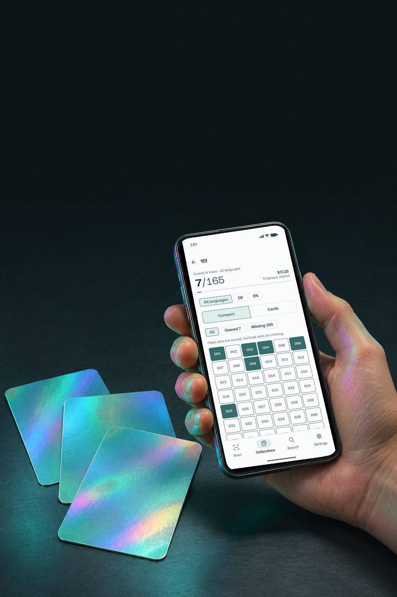

In 5 Minuten dabei
- Code scannen, Gruppe beitreten
- „Tester werden“ tippen
- Foilark aus dem Play Store laden
Gleiches Google-Konto wie im Play Store · 14 Tage dabeibleiben · Android 8+

Android-Tester gesucht
Pokémon-Karten scannen, sammeln und Cardmarket-Preise sehen. Kostenlos, ohne Werbung.
In 5 Minuten dabei
Gleiches Google-Konto wie im Play Store · 14 Tage dabeibleiben · Android 8+